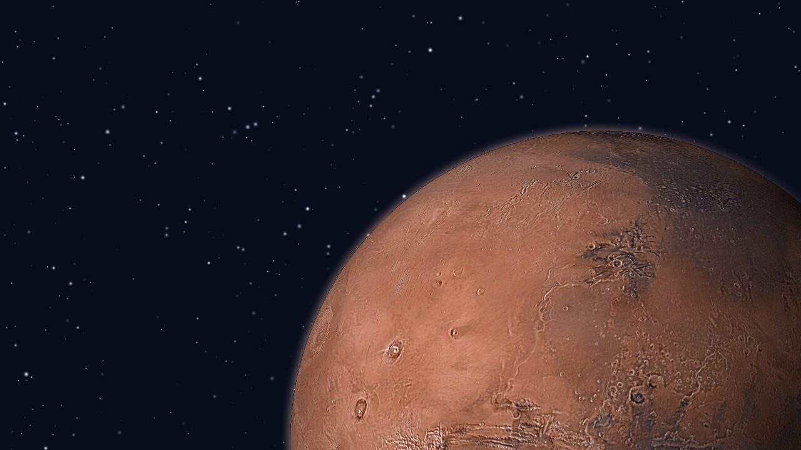
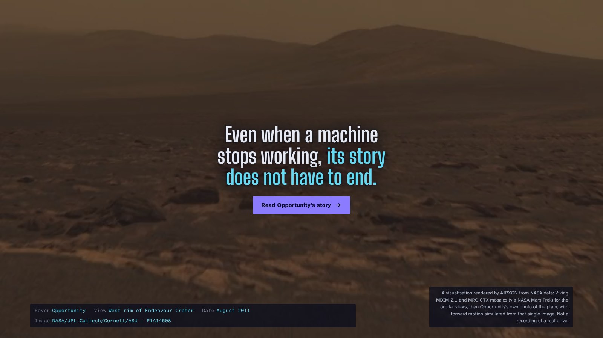
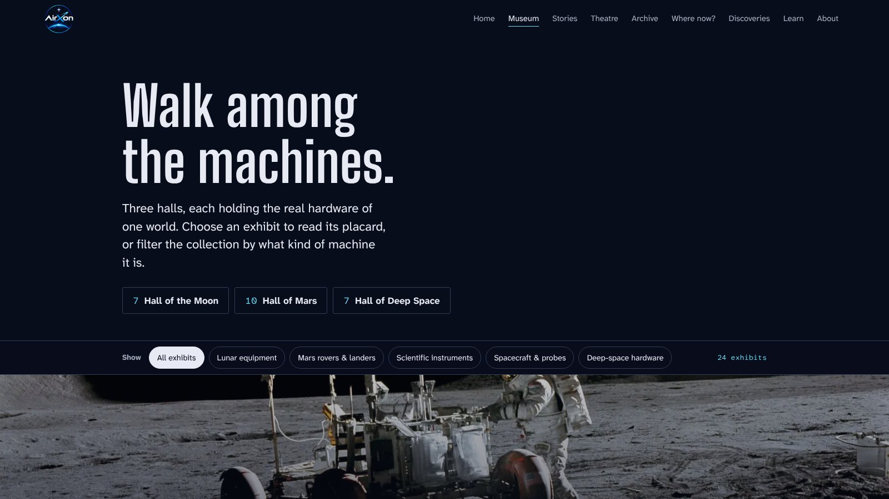
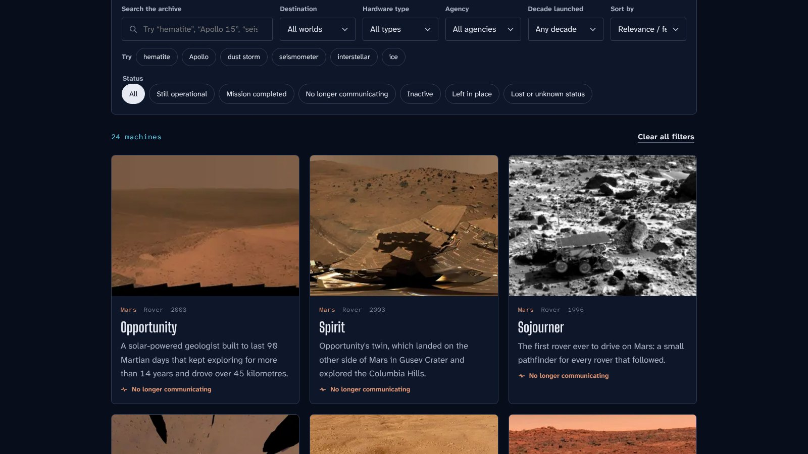
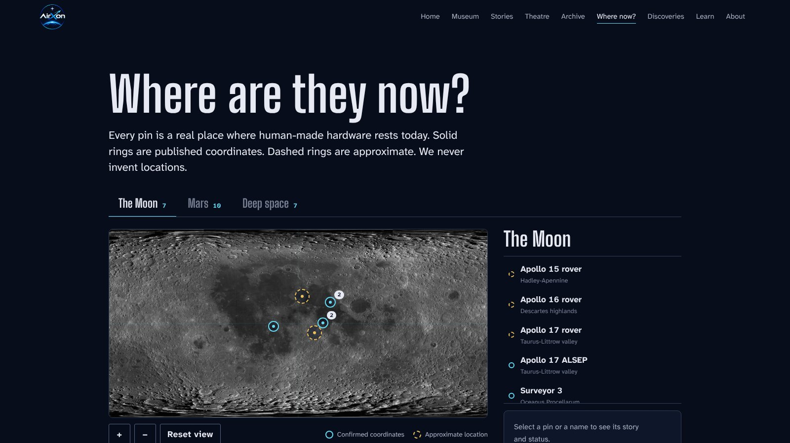
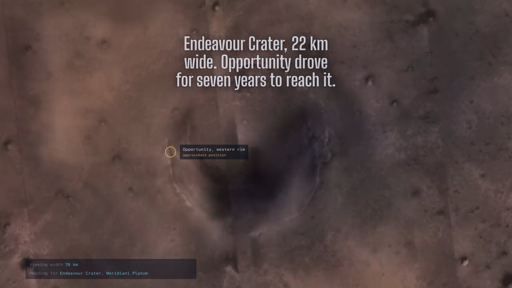
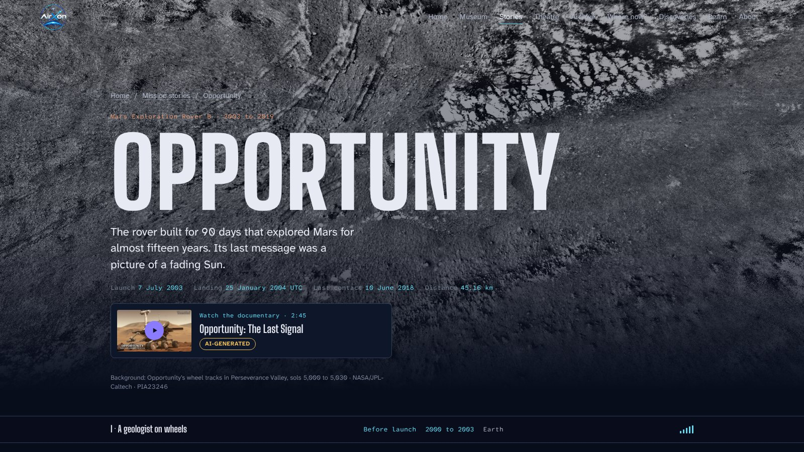
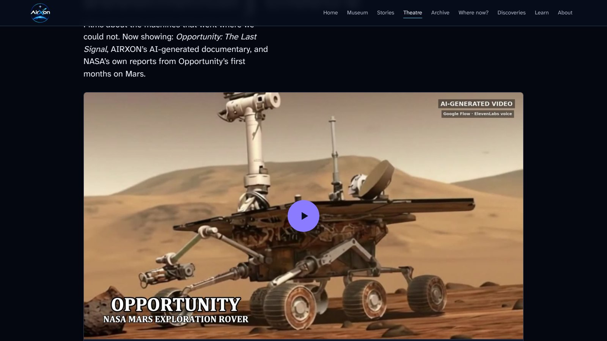
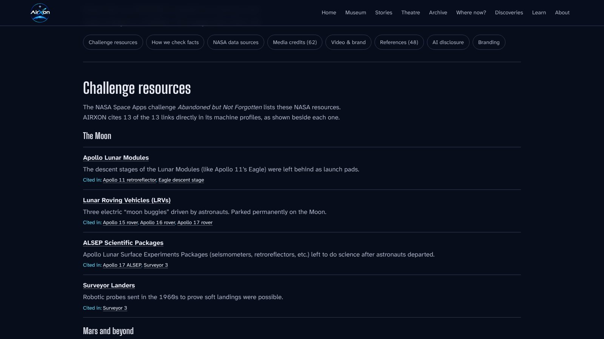

NASA SPACE APPS CHALLENGE 2026 · ABANDONED BUT NOT FORGOTTEN
An interactive museum of the machines humanity left on the Moon, on Mars and in deep space: what they did, what they found, and where they are now.
annobilobed.github.io/nasa-space-apps-2026
THE CHALLENGE
Rovers, landers, lunar buggies and probes still sit on other worlds or drift through space. Most people have never heard their stories, or think that when a mission ends the hardware simply disappears.
We asked: how do you make a silent machine’s story feel real, accurate and worth remembering, especially for young people?

Homepage: the journey ends on the ground at Endeavour Crater
WHAT WE BUILT

Three halls (Moon, Mars, deep space) with 24 machines, filters and exhibit placards.

Searchable profiles: purpose, instruments, discoveries, timeline, final status and sources.

Zoomable Moon and Mars maps, plus a distance scale for probes leaving the solar system.
STORYTELLING

Scroll from Mars in orbit down to Endeavour Crater and onto the ground, rendered from NASA Mars Trek data.

Six chapters with a live mission clock, a timeline and a dust storm explorer.

Opportunity: The Last Signal, captioned and labelled AI-generated
BUILT ON NASA DATA

Credits page: each challenge resource and the profiles that cite it
IMPACT
machines, 13 challenge resources. Precise status words (left in place, inactive, no longer communicating) teach that “abandoned” is rarely the whole story.
Laptop or phone. Every effect has a touch version: pinch-zoom maps, swipeable chapters and photos, and smooth page transitions.
Readable fonts, captions and keyboard access. A reduced-motion mode, automated accessibility checks (axe, WCAG 2.2 AA rules) and 111 automated tests.
A static site with no server or login, so it loads quickly even on slow connections.
Open source on GitHub. Adding a machine is one data entry; schools and other teams can reuse it.
Uncertainty is shown, not hidden, and AI-made media is watermarked and disclosed.
TRY IT
AIRXON is an independent educational project. It is not an official NASA product and is not endorsed by NASA.
AI DISCLOSURE
No AI-generated images appear anywhere else. Photos are NASA’s; the maps, globes and scroll film are rendered by scripts from NASA data.